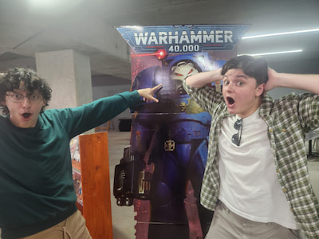

Jed van Eeden | WDD 130

Hello people! My name is Jed van Eeden, I am 20 years old. I am from Cape Town, South Africa and I'm excited to begin my journey in coding. More about me: As stated above, I am 20 years old and studying web and software developement. I have been extremely intrested in coding for a while now and finally getting to learn and understand it has been both a challenge and a blessing! I was born in Cape Town South Africa. A little bit more about me, I like to play video games and watch movies and shows alot. Im perticularly intrested in anime. Im a very big nerd and love all shows and games that have expansive universes because i love learning about the stories of fictional worlds.